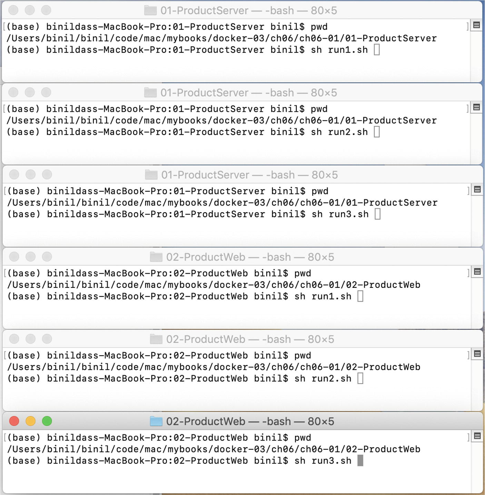
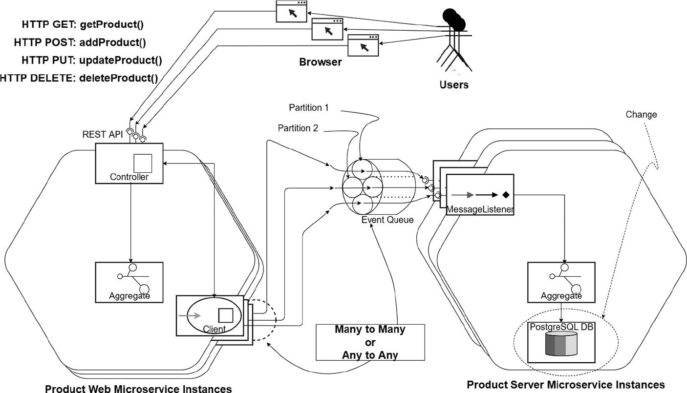
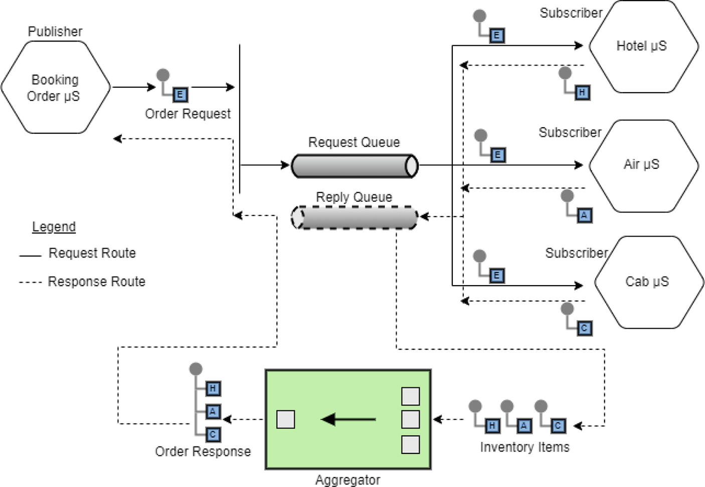
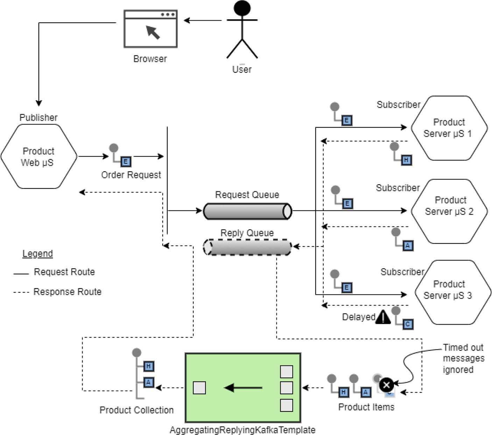
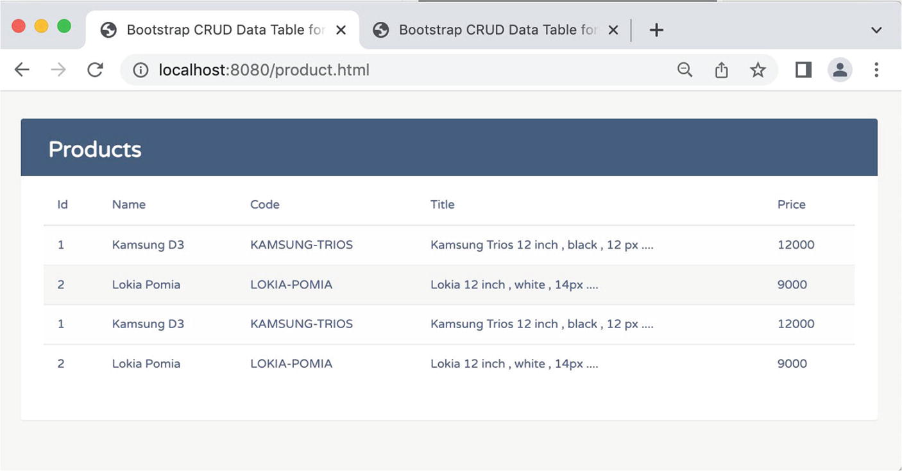
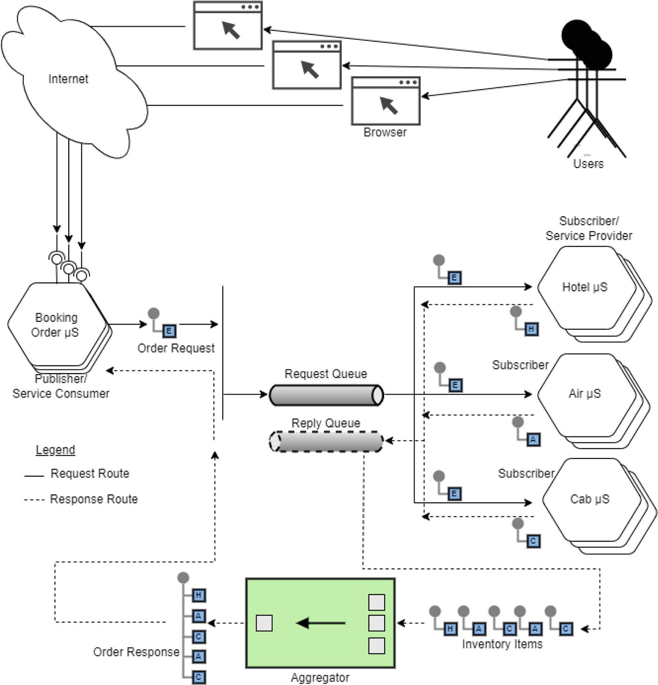
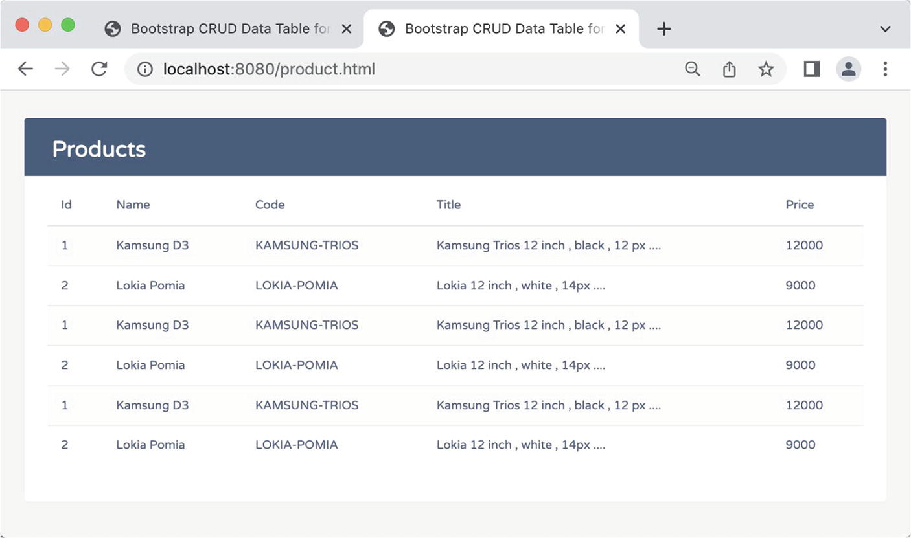

NBCRA 45, Christbin, Thiruvananthapuram, Kerala, India
Chapter 4 explained how messaging middleware can play a key role in providing a bridge for microservices to communicate with each other in a loosely coupled manner. Messaging channels are typically characterized by the asynchronous style of interaction, but Chapters 4 and 5 attempted to show how a synchronous user experience can be attained, even over asynchronous messaging channels. This is the first step in providing confidence that loosely coupled, messaging-based microservice interactions can be leveraged to implement many, if not all, your functional use cases. As mentioned in Chapter 5, many engineers are still skeptical on whether they can use events and the event paradigm for inter-microservices communication in a synchronous manner to implement a full data management paradigm. This chapter attempts to address that skepticism.
This chapter is fully hands on, with examples. An overview and working experience with the examples in Chapter 5 is required for you to quickly understand the enhanced examples in this chapter.
This chapter covers the following concepts:
Protocols and message formats for message exchange
Full CRUD (create, read, update, delete) functionality across microservices using Kafka in between
CRUD using MongoDB and PostgreSQL DB
A quick look at a few integration-patterns
Inter-Microservices Wire Level Options
There are pros and cons when we talk about message-oriented microservices. One of the main aspects relates to the inter-microservice communication format options. Let’s investigate those in the next section.
XML-RPC and SOAP
XML-RPC and SOAP have been the cornerstone of remote service invocation using web services for more than a decade. A web service is described by a WSDL (Web Services Description Language) document, which acts as the contract between the service provider and service consumer. A WSDL document describes how the web service is bound to a messaging protocol—in the case of the web services, the SOAP protocol.
A WSDL SOAP binding can be either an RPC-oriented binding or a document-oriented binding.
RPC-oriented style: Web services that use the RPC (Remote Procedure Call)-oriented style are interface-driven. Here the client applications invoke a web service method (call a remote procedure) by sending parameter values of the request and receiving parameter values of the response. The body of the SOAP request includes a wrapper XML element for this method. The parameters of this method are embedded as child elements inside this wrapper element.
Document-oriented style: Web services that use the document-oriented style are document (more precisely, XML document) driven. Here, the client applications send parameters to the web service as XML documents, instead of as discrete sets of parameter values. The body of the SOAP request and response messages contain one or more XML documents. The document-oriented style is flatter than the RPC-oriented style and does not require the use of wrapper elements.
REST and JSON-RPC
In the recent past, whenever somebody wanted to start building an HTTP API, they pretty much exclusively used REST as the de facto architectural style, over alternative approaches such as XML-RPC and SOAP. REST specifies a client-server relationship, where server-side data is made available through representations of data in simple formats, often JSON and XML. These representations for resources or collections of resources are then potentially modifiable, with actions or more precisely with HTTP actions. Relationships between data are made discoverable via a method known as hypermedia. Hypermedia is fundamental to REST and is essentially just the concept of providing links to other resources. In the section titled “HATEOAS and HAL” in Chapter 2, you have learned about this.
JSON-RPC is a remote procedure call protocol encoded in JSON. It is like the XML-RPC protocol, defining only a few data types and commands. JSON-RPC allows for notifications (data sent to the server that does not require a response) and for multiple calls to be sent to the server, which may be answered asynchronously.
RPC vs. Messaging
The fundamental difference between these two protocols is that an RPC framework is synchronous. You make a call, and you aren’t done until you receive the response. Messaging on the other hand is asynchronous. You send the message, and either you don’t expect a response, or you don’t know when it will come back, if at all!
If your caller needs information from a response from the service(s) you are requesting or calling, you should use an RPC, because you can’t return to your caller until you have the information you need from the provider. If your caller doesn’t need information from a downstream service, you can use messaging. Fire your message and forget it, since you are not expecting (rather, cannot expect) to receive a response.
RPC Style Messaging
As described, a messaging paradigm tries to enforce a fire-and-forget messaging style, but it is possible to use properly designed message queues to perform and mimic RPC, as explained in Chapter 5. Figure 5-7 in Chapter 5 depicts different reply channels for microservice communications, whereas Figure 5-8 depicts different reply partitions for microservices communicating with each other. In both scenarios, you can simulate synchronous style request-responses between participating microservices across messaging channels.
Unlike with the XML-RPC or SOAP scenario, when microservices communicate over plain messaging channels, they are not hard bound to a strict message invocation schema—a WSDL kind of mechanism which acts as the contract between the service provider and service consumer is missing. Hence, you need to weave a mechanism to specify “what action to perform.” HTTP provides standard verbs to provide semantic meaning for the intention of the action being taken.
HTTP Methods for CRUD on Resources
RPC-based APIs are great for actions (that is, procedures or commands), whereas REST-based APIs are great for modeling your domain (that is, resources or entities), making CRUD (create, read, update, delete) available for all your data. REST uses HTTP methods such as GET, POST, PUT, DELETE, OPTIONS and, hopefully, PATCH, to provide semantic meaning for the intention of the action being taken.
The main methods in HTTP you can leverage for implementing REST are listed here:
GET: GET is the simplest HTTP operation and its intention is to retrieve a resource from the server. 200 OK is the status code for a successful operation. All GET operations should be idempotent, which means regardless of how many times you repeat the operation with the same parameters, there should not be any change in state for the resource.
POST: HTTP POST provides an option for clients to send information to the server. POST is recommended for creating a new resource (even though it can also update an existing resource).
PUT:1 HTTP PUT also provides an option for clients to send information to the server; however, the usage semantics of PUT are slightly different from that of POST, as per HTTP. Using PUT, you can send a “new object” to the server to be placed at a location in the server represented by the URI, so the intent should be to replace the resource with a new one. A PUT request is idempotent as far as a single client is concerned. If only a subset of data elements is provided in a PUT request, the rest will be replaced with empty or null.
DELETE: DELETE allows clients to remove a resource from the server. The URI identifies the resource to be deleted. The resource may not have to be removed immediately; instead, it can be done by an asynchronous or long-running operation behind the scenes.
REST is not only CRUD, but things are done through mainly CRUD-based operations.
RPC, however, does not strictly follow standard HTTP verbs. Most use only GET and POST, with GET being used to retrieve information and POST being used for everything else. It is common to see RPC APIs using something like POST /deleteBar, with a body of { "id": 10 }, instead of the REST approach, which would be DELETE /bars/10.
JSON (JavaScript Object Notation) is an open standard file format and data interchange format that uses human-readable text to store and transmit data objects consisting of attribute–value pairs and arrays (or other serializable values). If you want to continue using this format, instead of sync style HTTP transport, you can use async style messaging transport. But when you don’t use standard HTTP, you miss the opportunity to use standard HTTP verbs and any of their associated advantages.
The next section looks at two examples demonstrating a few of these discission items. Specifically, we will adhere to REST for the end point APIs and we will attempt to stick to JSON for inter-microservice communication over Kafka.
CRUD Microservices Over Kafka on MongoDB
This example tweaks the same set of microservices in Chapter 5. A consumer and a provider microservice communicate with each other using Kafka as the messaging channel. The provider microservice stores the entity in a MongoDB database. Moreover, when the browser sends the request to the first (consumer) microservice, it uses async HTTP. Even though it uses async HTTP, the example emulates a sync-style user experience at the browser level.
As with the example in Chapter 5, this example is demonstrated with multiple instances of the consumer and provider microservices, and it uses multiple clients while testing the service.
This example introduces a new functional feature. It emulates a full CRUD (Create, Read, Update and Delete) feature through the microservice interactions, using Kafka as the messaging channel.
Design CRUD Over Async Channel on MongoDB
This example uses the modified version of the hexagonal microservice view shown in Figure 2-1 in Chapter 2, which you also visited in Chapter 5, so that both microservices communicate through an async channel. Apache Kafka is used as the messaging channel, which is inherently asynchronous. The objectives of this example are multifold:
To invoke synchronous-style communication over the Kafka-based async channel.
To demonstrate that multiple consumer types or multiple instances of the same consumer type can connect to one or more instances of the provider microservice and still receive the right responses corresponding to the respective request alone.
To demonstrate that the full set of CRUD actions can be orchestrated over the async channel.
To provide a sync-style experience to the users at the browser end, even though the example uses async HTTP.
To demonstrate that the browser can consume from fully compliant HATEOAS interfaces.
A microservice design has the following components. User. Browser. REST A P I. Product web microservice instances. Product server microservice instances.
Figure 6-1
Microservice design over async channel using partitions
As shown in Figure 6-1, this example will leverage Kafka partitions as the main concurrency mechanism in the async channel between the microservices. This async topic is divided into one or more partitions, five in this case, enabling the producer and consumer loads to be scaled. The consumers are shared evenly across the partitions, allowing for the consumer load to be linearly scaled by increasing the provider instances and their provisioned partitions.
Understanding the Source Code
The source code for this book is available on GitHub via the book’s product page, located at www.apress.com/9798868805547. The code for this example is organized inside the ch06\ch06-01 folder. Much of the source code for this example is similar to that in ch05\ch05-01. I explained in detail how to set up consumer and provider microservices that communicate with each other using a messaging channel. This section covers only the changes.
The main class to inspect is a new container class for the Productentity (see Listing 6-1), which has the following functions:
Acts as a container to transport collections of resources between microservices
Acts as a schema specification
public class Products {
public static final String CREATE = "Create";
public static final String DELETE = "Delete";
public static final String DELETE_ALL = "Delete_All";
public static final String UPDATE = "Update";
public static final String RETREIVE_ALL = "Retreive_All";
public static final String RETREIVE_DETAILS =
"Retreive_Details";
public static final String SUCCESS = "Success";
public static final String FAILURE = "Failure";
private String operation;
private List<Product> products;
public String getOperation() {
return operation;
}
public void setOperation(String operation) {
this.operation = operation;
}
public List<Product> getProducts() {
return products;
}
public void setProducts(List<Product> products) {
this.products = products;
}
}
Listing 6-1
The Container Class for Product Entity (ch06\ch06-01\02-ProductWeb\src\main\java\com\acme\ecom\product\model\Products.java)
The Products class lists counterparts for CRUD HTTP verbs as constant literals. The attribute operation is used to specify the action intended to be performed during the request phase. In the response phase, the same operation specifies the outcome of the request processing as “Success” or “Failure”. Next, the products collection may contain one or more Product entity. In the request phase, the products attribute contains one Product entity, whose attribute values correspond to the parameters of the operation to be performed. In the response phase of the operation, the same products collection may contain one or more Product entities corresponding to the response of the performed operation.
This method of piggybacking the request and response parameters and operations as payload is not the best, most elegant way, but it does the job.
Listing 6-2 shows the configuration class used by the Product Web microservice.
@Configuration
public class KafkaConfig {
@Bean
public CompletableFutureReplyingKafkaOperations<String,
Products, Products> replyKafkaTemplate() {
CompletableFutureReplyingKafkaTemplate<String,
Products, Products>
requestReplyKafkaTemplate = new
CompletableFutureReplyingKafkaTemplate<>(
requestProducerFactory(),
replyListenerContainer());
requestReplyKafkaTemplate.setDefaultTopic(
requestTopic);
requestReplyKafkaTemplate.setDefaultReplyTimeout(
Duration.of(replyTimeout, ChronoUnit.MILLIS));
return requestReplyKafkaTemplate;
}
@Bean
public ConsumerFactory<String, Products>
replyConsumerFactory() {
JsonDeserializer<Products> jsonDeserializer =
new JsonDeserializer<>();
jsonDeserializer.addTrustedPackages(
Products.class.getPackage().getName());
return new DefaultKafkaConsumerFactory<>(
consumerConfigs(), new StringDeserializer(),
jsonDeserializer);
}
@Bean
public KafkaMessageListenerContainer<String, Products>
replyListenerContainer() {
ContainerProperties containerProperties =
new ContainerProperties(replyTopic);
return new KafkaMessageListenerContainer<>(
replyConsumerFactory(), containerProperties);
}
}
Listing 6-2
Kafka Configuration for Product Web Microservice (ch06\ch06-01\02-ProductWeb\src\main\java\com\acme\ecom\product\KafkaConfig.java)
This code configures CompletableFutureReplyingKafkaTemplate, specifying that Products is sent as the request and Products is expected as the response.
Listing 6-3 inspects a single method in the Product Web controller. Other methods are implemented in a similar fashion, so that code is not replicated here for brevity.
REST Controller for Product Web Microservice (ch06\ch06-01\02-ProductWeb\src\main\java\com\acme\ecom\product\controller\ProductRestController.java)
While sending the request message to retrieve all the products from the Product Server microservice, you specify the operation as Products.RETREIVE_ALL. Even though you send an empty Products collection productsRequest along with the request, it’s not relevant or used here. However, for a few other methods, you could use this same productsRequest collection to send request parameters. You then use CompletableFutureReplyingKafkaOperations, which was configured in the previous step to send the request message and to receive its corresponding response message in a synchronous style, even though the underlying request and response message semantics are two separate asynchronous messages.
Note
A detailed explanation of CompletableFutureReplyingKafkaOperations and its usage pattern appears in Chapter 5.
On the Product Server microservice side, you must also configure and specify the Products container class as passing to and from the wire, as shown in Listing 6-4.
Kafka Configuration for Product Server Microservice (ch06\ch06-01\01-ProductServer\src\main\java\com\acme\ecom\product\KafkaConfig.java)
The ProductListener is the message listener at the Product Server microservice. ProductListener first resolves which operation to perform by inspecting the operation attribute and invoking the respective method. See Listing 6-5.
Kafka Listener for Product Server Microservice (ch06\ch06-01\01-ProductServer\src\main\java\com\acme\ecom\product\kafka\client\ProductListener.java)
Here again a single method is shown in the ProductListener, called getAllProducts. Other methods are implemented in similar ways, so their code is not replicated here.
You are also advised to refer to the second example in the section titled “Microservices Using MongoDB and CrudRepository” in Chapter 3, which explains how the Product Server microservice connects to a MongoDB to perform the complete set of CRUD operations.
Build and Run the Microservice
The ch06\ch06-01 folder contains the Maven scripts required to build the examples. As a first step, you need to bring up the Kafka broker. Refer to Appendix D to learn how to set up a Kafka server and bring it up. You need to execute the commands in Listing 6-6 to bring up Kafka from the Kafka installation location.
As a next step, you need to bring up the MongoDB server. Refer to Appendix B to learn how to set up a MongoDB server and bring it up. You need to execute the commands in Listing 6-7 to bring up MongoDB.
Next, you need to build and install the utility library from Callista Enterprise (see Listing 6-8). Refer to Chapter 5 for a brief introduction to this library.
Commands to Build and Install the Utility Library from Callista Enterprise
Next, use two command terminals and change the directory to the top-level folder of both microservices. First, build the Product Server microservice using the make.sh scripts, as shown in Listing 6-9.
(base) binildass-MacBook-Pro:02-ProductWeb binil$ sh run3.sh
...
Listing 6-16
Commands to Run the Product Web Microservice Instance 3
Figure 6-2 shows the process of accessing multiple instances of these microservices.

A screenshot contains the code for testing the microservices using multiple instances.
Figure 6-2
Testing the microservices using multiple instances
Now that both microservices are up and running, you can test the microservices.
Testing the Microservices
In order to test these microservices, refer to the “Testing Parallel Request Processing” section in Chapter 5. Alternatively, you can use the following section.
There is more than one way to test these microservices. One way is to use three browser instances and point to the URLs in Listing 6-17 to test the microservices.
http://localhost:8080/product.html
http://localhost:8081/product.html
http://localhost:8082/product.html
Listing 6-17
Testing the Microservice Using Browsers
Follow the detailed instructions described in the section titled “Test the Microservice Using UI” in Chapter 1 to test the CRUD operations.
Alternatively, you can now take three (or even more) separate terminals to run cURL client commands concurrently. Listing 6-17 shows cURL clients sending requests to the Product Web microservice.
(base) binildass-MacBook-Pro:02-ProductWeb binil$ sh loopcurl1.sh
{"_embedded":{"products":[{"productId":"1","name":"Kamsung D3","code":"KAMSUNG-TRIOS","title":"Kamsung Trios 12 inch , black , 12 px ....","price":12000.0,"_links":{"self":{"href":"/products/1"}}},{"productId":"2","name":"Lokia Pomia","code":"LOKIA-POMIA","title":"Lokia 12 inch , white , 14px ....","price":9000.0,"_links":{"self":{"href":"/products/2"}}}]},"_links":{"self":{"href":"/productsweb"},"getAllProducts":{"href":"/productsweb"}}}
(base) binildass-MacBook-Pro:02-ProductWeb binil$ sh loopcurl3.sh
...
Listing 6-21
Endurance Test Using cURL Client 3
This completes the first example. This example has attempted to demonstrate many of the concepts covered in the book so far. For the completeness of this discussion, the next section covers a PostgreSQL version of this example.
CRUD Microservices Over Kafka on PostgreSQL
This example tweaks the same set of microservices you saw in the previous section. A consumer and provider microservice communicate with each other using Kafka as the messaging channel. The provider microservice stores the entity in a PostgreSQL database instead of in MongoDB. When the browser sends a request to the first (consumer) microservice, it uses async HTTP. Even though the code uses async HTTP, it emulates a sync-style user experience at the browser level.
As with the previous example, this example aims to demonstrate multiple instances of the consumer and provider microservices and uses multiple clients while testing this service.
Design CRUD Over Async Channel on PostgreSQL
This example uses the modified version of the hexagonal microservice view shown in Figure 2-1 in Chapter 2, which was revisited in Chapter 5 and tweaked slightly in the previous example. Here, both microservices communicate through an async channel. The example uses Apache Kafka as the messaging channel, which is inherently asynchronous.

A microservice design starts with the user, followed by browser, rest A P I, product web microservice instances, and product server microservice instances.
Figure 6-3
Microservice design over async channel using partitions
The noticeable change from the previous example is that the provider microservice stores the entity in a PostgreSQL database instead of using a MongoDB database. This change is marked in Figure 6-3.
Understanding the Source Code
The source code for this book is available on GitHub via the book’s product page, located at www.apress.com/9798868805547. The code for this example is organized inside the ch06\ch06-02 folder.
The only change in the code from the previous example is that the provider microservice stores the entity in a PostgreSQL database instead of using a MongoDB database. The code needed for the provider microservice to store the entity in a PostgreSQL database and perform complete CRUD operations is described in detail in the section titled “Understanding the Code” in the first example in Chapter 3. You are directed to refer to that section for explanations.
Build and Run the Microservice
The ch06\ch06-02 folder contains the Maven scripts required to build these examples. As a first step, you need to bring up the Kafka broker. Refer to Appendix D to learn how to set up a Kafka server and bring it up. You need to execute the commands in Listing 6-22 to bring up Kafka from the Kafka installation location.
Next, you need to bring up the PostgreSQL DB server. Refer to Appendix C to learn how to set up PostgreSQL server and bring it up. You need to execute the commands in Listing 6-23 to bring up PostgreSQL.
Next, you need to build and install the utility library from Callista Enterprise (see Listing 6-24). Refer to Chapter 5 for a brief introduction to this library.
Commands to Build and Install the Utility Library from Callista Enterprise
Next, use two command terminals and change the directory to the top-level folder of both microservices. Then build the Product Server microservice using the make.sh scripts, as shown in Listing 6-25.
2024-03-04 17:52:57 INFO InitializationComponent.init:42 - Start
2024-03-04 17:52:57 INFO InitializationComponent.init:70 - End
2024-03-04 17:52:58 INFO StartupInfoLogger.logStarted:56 - Started EcomProductServerMicroserviceApplication in 4.665 seconds (process running for 5.577)
Listing 6-27
Commands to Run the Product Server Microservice Instance 1
Next, bring up the second instance of the Product Server microservice, as shown in Listing 6-28.
Commands to Run the Product Web Microservice Instance 3
Now that both microservices are up and running, you can test the microservices.
Testing the Microservice
To test the microservices, you are directed to refer to the “Testing Parallel Request Processing” section in Chapter 5. Alternatively, we will follow as below.
There is more than one way to test these microservices. One way to test them is to use three browser instances to point to the URLs shown in Listing 6-33.
http://localhost:8080/product.html
http://localhost:8081/product.html
http://localhost:8082/product.html
Listing 6-33
Testing the Microservice Using Browsers
Follow the detailed instructions described in the section “Test the Microservice Using UI” in Chapter 1 to test these CRUD operations.
Alternatively, you can now use three (or more) separate terminals to run cURL client commands concurrently. Listing 6-34 shows the cURL clients sending requests to the Product Web microservice.
(base) binildass-MacBook-Pro:02-ProductWeb binil$ sh loopcurl3.sh
...
Listing 6-37
Endurance Test using cURL Client 3
This completes the second example, using PostgreSQL.
Before I close this chapter, the next section quickly explains an important concept called integration patterns. They show how such standard and defined patterns provide value to architectures involving Message Oriented Middleware (MOM).
Aggregating Responses from Multiple Microservices
All through the previous chapters and the previous sections in this chapter, you have seen different combinations in which you can mix and match the transport connectivity options between microservices to simulate different message exchange patterns. To complete this discussion, this section looks at an integration pattern called an aggregator. You can use this pattern to aggregate responses from multiple microservices.
Aggregator Integration Pattern
Let’s first look at what an aggregator pattern is. An aggregator is a stateful filter used to collect and store individual messages until a complete set of related messages has been received. The aggregator can then filter, compose, and publish a single message distilled from the individual messages. See Figure 6-4.

A diagram illustrates the aggregator integration pattern. Books are ordered by the users to the publishers, which is then requested and replied, and the response are made by aggregator integration.
Figure 6-4
Aggregator integration pattern
Figure 6-4 depicts a typical travel booking scenario done by travel agents. The Booking Order microservice is used by the travel agent to fulfill the booking request on behalf of a traveler. The Booking Order microservice can also be used by a traveler directly through the web or mobile apps. Assuming the booking has to be done for a combined itinerary involving hotel accommodations, air travel, and airport drop-off and pickup, these individual fulfillment inventory items will be owned by different third-party providers—a Hotel microservice, an Air microservice, and a Cab microservice, in this case. These different inventory owner microservices will pick up the booking request and try to fulfill the respective booking component and send a response message back to the reply queue. Now comes the part of the aggregator.
The aggregator, being a stateful filter, can wait for multiple replies until a timeout. The aggregator can then compose from the individual response messages and publish a single message to the Booking Order microservice.
The next section looks at some working code to show this pattern.
Design the Microservice Aggregator
This example uses the now-familiar Product Web and Product Server microservices domain. As shown in Figure 6-5, users interact with the Product Web microservice from a browser. The Product Web microservice in turn invokes the Product Server microservice. The Product Server microservice retrieves data from a database, from an in-memory database in this example, and sends the response.
Inter-microservice communication happens over a messaging channel.
Moreover, the request message is relayed to more than one service provider. The objective is to enable the Product Web microservice to relay requests to more than one service provider and receive responses from all or many of these service providers. The Product Web microservice acts as an aggregator and stores individual messages until a complete set of related messages has been received. The aggregator can then filter, compose, and publish a single message distilled from the individual messages to the browser. See Figure 6-5.

A diagram illustrates the microservices aggregator. Users interact with the product web microservice from the browser. The service retrieves data from the database, and sends the response.
Figure 6-5
Microservices aggregator
To keep the complexity of the example under control, it does not use different kinds of provider microservices. Instead, the example uses different instances of the same kind of microservice. However, note that nothing prevents you from having different kinds of provider microservices responding to the same request message.
Understanding the Source Code
The source code for this book is available on GitHub via the book’s product page, located at www.apress.com/9798868805547. The code for this example is organized inside the ch06\ch06-03 folder, which was explained in detail. The additional wiring plugs in an aggregator between the two microservices and the mechanism used to relay the single request from the Product Web microservice to more than one (instance of the) provider microservice, which you will see in the code in this section.
Spring Kafka provides AggregatingReplyingKafkaTemplate, a replying template that aggregates multiple replies with the same correlation ID. AggregatingReplyingKafkaTemplate is a listener that handles a batch of incoming Kafka messages. The list of batch messages is created from the consumer records object returned by a poll. AggregatingReplyingKafkaTemplate extends the behavior of ReplyingKafkaTemplate<K,V,R> from Spring, which extends the behavior of KafkaTemplate to provide request-reply semantics. You saw this in detail in Chapter 4, so I only explain the additional features of AggregatingReplyingKafkaTemplate, as configured in Listing 6-38.
The Product Web Kafka Configuration (ch06\ch06-03\02-ProductWeb\src\main\java\com\acme\ecom\product\KafkaConfig.java)
The replyContainer bean creates properties for a container that will subscribe to the specified topic—requestReplyTopic in this case. You can configure this listener container to consume more than one topic. The replies must then contain the correlation ID header (used to aggregate). The framework will create a container that subscribes to all topics matching the specified pattern to get dynamically assigned partitions.
Using the replyContainer, you configure an AggregatingReplyingKafkaTemplate, specifying that you expect a collection of ConsumerRecord-containing Products. Then you set replyTemplate.setReturnPartialOnTimeout(true), which simply means that the template will consult the release strategy upon timeout. The template does this with the timeout argument set to true, to tell the strategy it’s a timeout rather than a delivery call. When it’s set to true, it releases a partial result. You can also take many actions and look at (and possibly modify) the list to decide whether you want to release or discard.
One more parameter (numProviders) is configured in this example. You set numProviders (in this case, in application.properties) to 3, as shown in Listing 6-39. This is because you have three instances of the Product Server microservice. Once you receive response messages from the three Product Server microservice instances, you no longer want to wait for more responses.
By specifying replyTemplate.setSharedReplyTopic(true), you indicate that multiple templates are using the same topic for replies. This simply changes logs for unexpected replies to debug instead of error.
The replyTemplate.setDefaultReplyTimeout() will set a timeout to check this release strategy in this example.
product.topic.reply.numProviders: 3
product.topic.reply.aggregatingTimeout: 6
Listing 6-39
The Product Web Kafka Configuration (ch06\ch06-03\02-ProductWeb\src\main\resources\application.properties)
You can tweak this value by changing the value for aggregatingTimeout in application.properties of the Product Web microservice to test different scenarios. Listing 6-40 shows the dynamics of the aggregator code.
public ResponseEntity<List<Product>> getAllProducts()
throws InterruptedException,
ExecutionException, TimeoutException {
ProducerRecord<String, String> record =
new ProducerRecord<String, String>(
requestTopic, "All");
record.headers().add(new RecordHeader(
KafkaHeaders.REPLY_TOPIC,
requestReplyTopic.getBytes()));
RequestReplyFuture<String, String, Collection<
ConsumerRecord<String, Products>>>
sendAndReceive =
kafkaTemplate.sendAndReceive(record);
SendResult<String, String> sendResult =
sendAndReceive.getSendFuture().get();
sendResult.getProducerRecord().headers().forEach(
header -> LOGGER.trace(header.key() + ":" +
header.value().toString()));
sendAndReceive.getSendFuture().get(30,
TimeUnit.SECONDS);
ConsumerRecord<String, Collection<ConsumerRecord<
String, Products>>>
consumerRecords = sendAndReceive.get();
Collection<ConsumerRecord<String,
Products>> consumerRecord =
consumerRecords.value();
List<Product> products =new ArrayList<Product>();
for(ConsumerRecord<String, Products>
temp:consumerRecord) {
products.addAll(temp.value().getProducts());
}
return new ResponseEntity(products, HttpStatus.OK);
}
}
Listing 6-40
The Product Web REST Controller (ch06\ch06-03\02-ProductWeb\src\main\java\com\acme\ecom\product\controller\ProductRestController.java)
For an explanation of the code in Listing 6-40, see the section titled “Sync over Async Microservices” in Chapter 4. Here, I explain only the new code for fulfilling the aggregation. sendAndReceive sends the request and AggregatingReplyingKafkaTemplate receives a ConsumerRecord, which by itself is a Collection of ConsumerRecords containing a Collection of Products retrieved from each instance of the Product Server microservice (a Collection of Collection)!
You can disassemble the ConsumerRecord of Collection of ConsumerRecord of Collection of Products, flatten it, and aggregate it into a single ArrayList and return. Note that you are not doing any filtering, de-duplication, or any such transformations here. However, you are free to do any further processing based on your requirements.
Build and Run the Microservice
The ch06\ch06-03 folder contains the Maven scripts required to build the examples. First, you need to bring up the Kafka broker. Refer to Appendix D to learn how to set up Kafka server and bring it up. You need to execute the commands in Listing 6-41 to bring up Kafka from the Kafka installation location.
Next, use two command terminals and change the directory to the top-level folder of both microservices. Then build the Product Server microservice using the make.sh scripts, as shown in Listing 6-42.
Commands to Run the Product Server Microservice Instance 3
Note one aspect in Listings 6-44 through 6-46:—the value passed for the environment variable spring.kafka.consumer.group-id. The example configures different values for this so that the message consumers (or the provider microservices) are in different groups (group.id). If they are all in the same group, only one of them will consume the request. By specifying all three instances of the Product Server microservices to be in different consumer groups, all of them will consume the same request message.
Next, run the Product Web microservice instance, as shown in Listing 6-47.
Now, referring to Listing 6-30, you have configured the following in the Product Web microservice so that it will time out in six seconds:
product.topic.reply.aggregatingTimeout: 6
It will receive responses from the Product Server microservice instances 1 and 3 alone.
Testing the Microservice
When all is set, you can access the web application using your browser and pointing to this URL (see Figure 6-6):
http://localhost:8080/product.html

A screenshot contains the following providers. Kamsung. Lokia. Kamsung. Lokia Pomia.
Figure 6-6
Testing the microservices, showing results from two of the three service providers
As described, the example uses three instances of the Product Server microservice instead of three different microservice types, so all of them will reply with the same response. But in Listing 6-45, there is a delay called sleeptimeout=10 for one of the Product Server microservices. Listing 6-39 shows aggregatingTimeout: 6 for the Product Web microservice, so the AggregatingReplyingKafkaTemplate of the Product Web microservice will not wait for the response from this instance of the Product Server microservice.
Since you are not doing any filtering, de-duplication, or any such transformation, you’ll see duplicated line items from the responses of two instances of the Product Server microservices.
Listing 6-48 shows the logging by the AggregatingReplyingKafkaTemplate on the Product Web microservice.
list.size() : 1; timeout : false
list.size() : 2; timeout : false
list.size() : 2; timeout : true
Listing 6-48
Aggregator Times Out
Listing 6-48 shows what is happening when the template is consulting the release strategy upon timeout. The first two lines correspond to when responses are received from the two instances of the Product Web microservice within the timeout limit. The third line corresponds to when the template does this with the timeout argument set to true, to tell the strategy it’s a timeout rather than a delivery call, so it will not wait for any more responses.
In real life, you may not statically configure product.topic.reply.numProviders, as is done in in Listing 6-39. Instead, you have to dynamically form the value of numProviders based on the minimum number of service providers you expect until there’s a timeout. The typical production design is shown in Figure 6-7, where the travel agent or travel aggregator has contracts with multiple air, hotel, cab and other ancillary service providers. Travel search parameters are relayed to all or preferred inventory providers and the responses from all or many of these preferred providers are aggregated. Filtering, de-duplication, or any transformations can be applied and the result set sorted again, based on a similar set of rules and responses sent to the Booking Service provider Web microservice.

A process diagram illustrate the aggregator connected to the third-party inventory providers.
Figure 6-7
Booking aggregator connected to third-party inventory providers
I will now change the test condition. Let’s increase the aggregating timeout, as shown in Listing 6-49.
product.topic.reply.numProviders: 3
product.topic.reply.aggregatingTimeout: 15
Listing 6-49
The Product Web Kafka Configuration (ch06\ch06-03\02-ProductWeb\src\main\resources\application.properties.
You increase the aggregating timeout by adjusting the value in Listing 6-49 so that you are sure you will receive responses from all three instances of the Product Server microservice before the timeout, as configured in Listings 6-44 through 6-46.
You have not made any changes to the Product Server microservice, so you could repeat the test with the same running instances of it. But you need to rebuild and rerun the Product Web microservice, as shown in Listing 6-50.
2022-05-22 10:54:12 INFO com.acme.ecom.product.controller.ProductRestController.getAllProducts:84 - Thread : Thread[http-nio-8080-exec-5,5,main]
Listing 6-50
Rebuild and Run Product Web Microservice Using Scripts
You can now test the application by accessing the web application using your browser and pointing to this URL (see Figure 6-8):
http://localhost:8080/product.html

A screenshot contains the following service providers. Kamsung. Lokia.
Figure 6-8
Testing the microservices, showing results from all the service providers
If you observe Listing 6-50, you can see that even though the timeout has not occurred, since you received responses from all expected instances of the Product Server microservices, you can terminate waiting at the third delivery call, as shown in Listing 6-51.
list.size() : 1; timeout : false
list.size() : 2; timeout : false
list.size() : 3; timeout : false
Listing 6-51
Aggregator Times Out
You can see duplicated line items from the three instances of the Product Server microservices in Figure 6-8.
Summary
Starting with the simplest of the microservices in Chapter 1, you have come a long way in understanding multiple variants of microservices architectures. You have tried and tested many concurrency and integration patterns, with familiar SQL and NoSQL databases. The examples in these chapters can be extracted to use as templates and modified for your daily production use cases. The stage is now set to begin the next journey to Containers, which are covered in the next chapter.